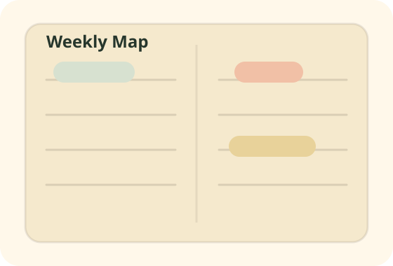
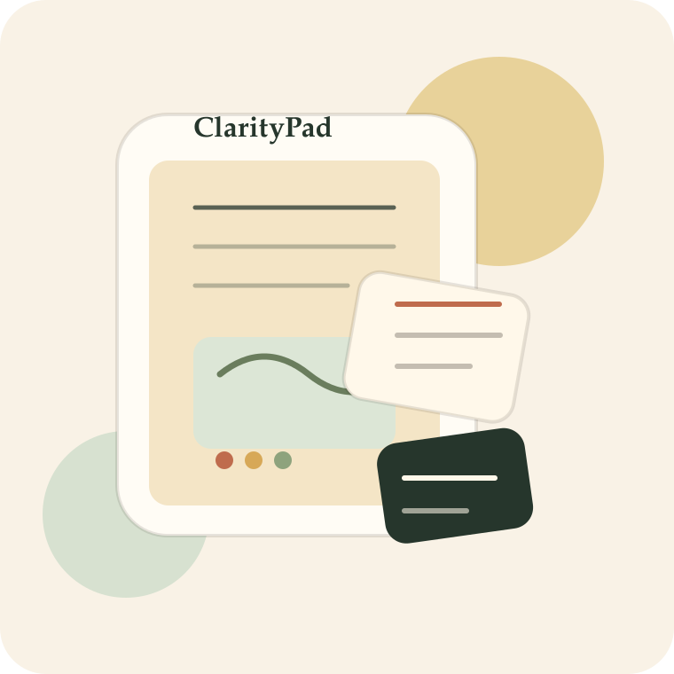
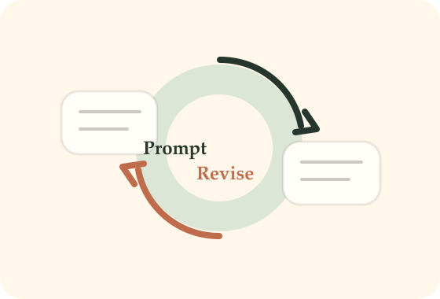
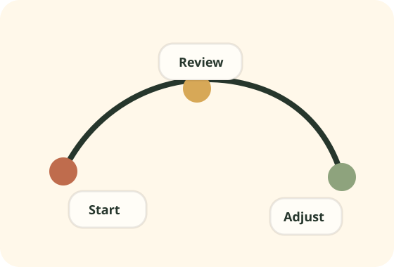

Weekly Map
A two-page weekly spread that helps students translate deadlines into a realistic study map instead of an overwhelming list.
Move 1 · Get Attention
ClarityPad is an AI-supported study planner that blends a paper notebook, focused prompts, and weekly reflection loops so students can turn scattered tasks into a routine they can actually keep.

A study planner for students who need structure, not more noise.
Move 2 · Introduce the Project
Many students already use to-do apps, note apps, and AI tools, but their study systems still break down under pressure. Tasks pile up, priorities blur, and reflection never happens because every tool asks for more screen time and more decisions.
ClarityPad turns planning into a simple weekly rhythm: define the week, choose a daily focus, ask AI for help only when needed, and close the loop with a short reflection that improves the next week.
Move 2 · Product Features

A two-page weekly spread that helps students translate deadlines into a realistic study map instead of an overwhelming list.

Built-in prompt cards help users ask AI for study plans, summaries, practice questions, and revision help with better context and less guesswork.

Short reflection prompts make students review what worked, what failed, and what to adjust before the next cycle begins.
Motion Substitute · Demo Storyboard
This project currently uses an animated storyboard instead of an AI-generated short video. It still shows the intended user journey in a form that is easy to submit and easy to replace later.
The student maps classes, deadlines, and deep-work blocks into a realistic weekly rhythm.
Prompt cards turn vague questions into focused study requests, such as quiz creation or chapter summaries.
A quick end-of-week review captures friction points and updates next week’s plan before stress compounds.
Move 3 · Build Credibility
I am building ClarityPad as a student who has repeatedly seen how “productive” systems collapse during busy weeks. The project grows from direct personal experience: too many tabs open, too many unfinished plans, and too little reflection.
This is not presented as a finished mass-market product. It is a student-led prototype with a clear audience, a practical use case, and an honest development scope. The goal of the crowdfunding page is to demonstrate a persuasive concept and a transparent creation process.
Designed for university students who need a calmer way to plan, revise, and review across demanding academic weeks.
The product combines a low-friction paper tool with optional AI support, instead of forcing every step into one digital system.
This project explicitly labels which parts are human-written, AI-assisted, and still pending future replacement.
Move 4 · Ask for Support
Click a tier to preview the reward summary. This interaction stands in for the clickable pledge levels required in the assignment.
Move 5 & 6 · Thanks and Community
Backers help shape a better study tool for students who want structure without overload. Every pledge supports prototyping, testing, and a more thoughtful conversation about how AI should help learners rather than distract them.
Move 7 · Transaction Details
Digital tiers are delivered by download link. Physical tiers are shipped after the production batch is confirmed. Supporters will receive progress updates before fulfillment begins.
Move 8 · Risks and Guarantees
The project will stay transparent about scope, updates, and any changes to schedule. If the final physical version must be delayed, digital materials and status updates will be shared first.